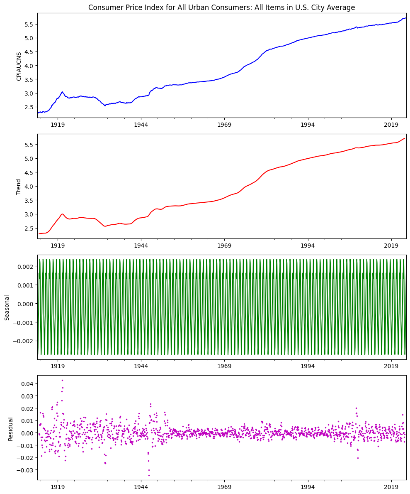
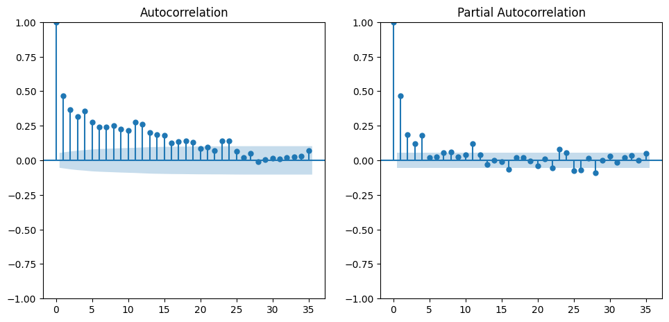
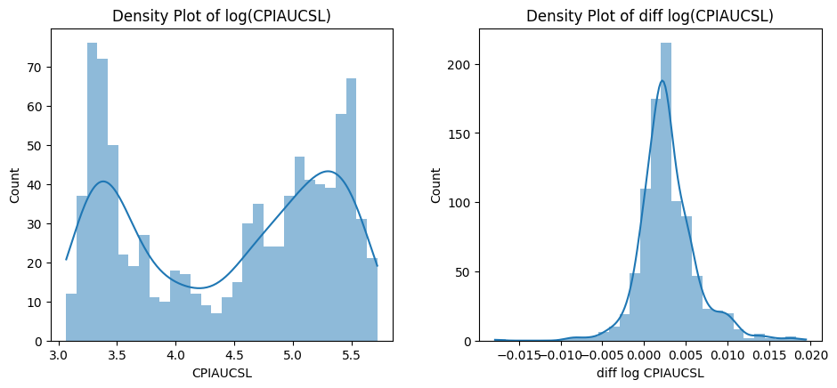
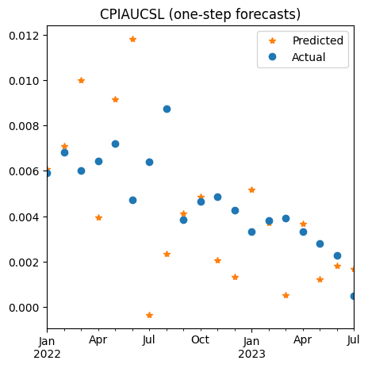

Econometric Forecasts#
UNDER CONSTRUCTION
Trends: seasonality
Autocorrelation Function: AR, MA, SARIMAX
Unit root: integration order
Forecasting: single-step, multi-step
Granger casuality, impulse response function, Vector Autoregression
import numpy as np
import pandas as pd
from pandas import DataFrame, Series
import matplotlib.pyplot as plt
import time
import os
import seaborn as sns
from statsmodels.tsa.ar_model import AutoReg, ar_select_order
from statsmodels.graphics.tsaplots import plot_acf, plot_pacf, acf
from statsmodels.tsa.seasonal import seasonal_decompose
from statsmodels.tsa.statespace.sarimax import SARIMAX
from statsmodels.tsa.stattools import grangercausalitytests
from statsmodels.tsa.api import VAR
import statsmodels.formula.api as smf
from sklearn.metrics import mean_squared_error
from finds.readers import Alfred
from finds.busday import BusDay
from finds.econs import integration_order
from finds.misc import Show
from secret import paths, credentials
show = Show(ndigits=4, latex=None)
VERBOSE = 0
# %matplotlib qt
imgdir = paths['images'] / 'ts'
alf = Alfred(api_key=credentials['fred']['api_key'])
series_id, freq, start = 'CPIAUCNS', 'M', 0 #19620101 # not seasonally adjusted
df = alf(series_id, log=1, freq=freq, start=start).dropna()
df.index = BusDay.to_datetime(df.index)
Seasonality#
## Seasonality Decomposition Plot
result = seasonal_decompose(df, model = 'add')
fig, ax = plt.subplots(nrows=4, ncols=1, clear=True, figsize=(10, 12))
result.observed.plot(ax=ax[0], title=alf.header(result.observed.name),
ylabel=result.observed.name, xlabel='', c='b')
result.trend.plot(ax=ax[1], ylabel='Trend', xlabel='', c='r')
result.seasonal.plot(ax=ax[2], ylabel='Seasonal', xlabel='', c='g')
result.resid.plot(ax=ax[3], ls='', ms=3, marker='.', c='m',
ylabel='Residual', xlabel='')
plt.tight_layout()
plt.savefig(imgdir / 'seasonal.jpg')

Autocorrelation#
Plot ACF and PACF
values = df.diff().dropna().values.squeeze()
fig, axes = plt.subplots(1, 2, clear=True, figsize=(10,5))
plot_acf(values, lags=35, ax=axes[0])
plot_pacf(values, lags=35, ax=axes[1], method='ywm')
plt.tight_layout(pad=2)
plt.savefig(imgdir / 'acf.jpg')

Stationarity#
Integration Order: Log CPI (Seasonally Adjusted)
series_id = 'CPIAUCSL' #19620101 # seasonally adjusted
#series_id = 'GDPC1'
df = alf(series_id, log=1, start=0).dropna()
df.index = BusDay.to_datetime(df.index)
p = integration_order(df, noprint=False, pvalue=0.05)
Series({series_id: p}, name='I(p)').to_frame()
Augmented Dickey-Fuller unit root test:
Test Statistic p-value Lags Used Obs Used Critical Value (1%) Critical Value (5%) Critical Value (10%)
I(0) -0.154936 0.943684 15.0 903.0 -3.437612 -2.864746 -2.568477
Test Statistic p-value Lags Used Obs Used Critical Value (1%) Critical Value (5%) Critical Value (10%)
I(1) -4.575503 0.000143 14.0 903.0 -3.437612 -2.864746 -2.568477
| I(p) | |
|---|---|
| CPIAUCSL | 1 |
Histogram Plot and Kernel Density Estimate
fig, axes = plt.subplots(1, 2, clear=True, figsize=(10,5))
sns.histplot(df.dropna(),
bins=30,
lw=0,
kde=True,
#line_kws={"color": "r"},
ax=axes[0])
axes[0].set_title(f"Density Plot of log({series_id})")
sns.histplot(df.diff().dropna().rename(f"diff log {series_id}"),
bins=30,
lw=0,
kde=True,
#line_kws={"color": "r"},
ax=axes[1])
axes[1].set_title(f"Density Plot of diff log({series_id})")
plt.savefig(imgdir / 'order.jpg')
plt.tight_layout(pad=3)

AR, ARMA, SARIMAX#
AR(p) is simplest time-model, can nest in SARIMAX(p,d,q,s) with
integration order I(d), moving average MA(q), seasonality S(s), exogenous X
split_date = '2021-12-31'
series_id, freq, start = 'CPIAUCNS', 'M', 0 # not seasonally adjust
log_df = alf(series_id, log=1)
log_df.index = BusDay.to_datetime(log_df.index)
log_df = log_df.loc[:split_date].dropna()
pdq = (1, 1, 3) #(12, 1, 0)
seasonal_pdqs = (0, 0, 0, 12)
arima = SARIMAX(log_df,
order=pdq,
seasonal_order=seasonal_pdqs,
trend='c').fit()
fig = arima.plot_diagnostics(figsize=(10,6), lags=36)
plt.tight_layout(pad=2)
plt.savefig(imgdir / 'ar.jpg')
arima.summary()
/home/terence/env3.11/lib/python3.11/site-packages/statsmodels/tsa/base/tsa_model.py:473: ValueWarning: No frequency information was provided, so inferred frequency M will be used.
self._init_dates(dates, freq)
/home/terence/env3.11/lib/python3.11/site-packages/statsmodels/tsa/base/tsa_model.py:473: ValueWarning: No frequency information was provided, so inferred frequency M will be used.
self._init_dates(dates, freq)
This problem is unconstrained.
RUNNING THE L-BFGS-B CODE
* * *
Machine precision = 2.220D-16
N = 6 M = 10
At X0 0 variables are exactly at the bounds
At iterate 0 f= -3.76541D+00 |proj g|= 1.11379D+02
Warning: more than 10 function and gradient
evaluations in the last line search. Termination
may possibly be caused by a bad search direction.
At iterate 5 f= -3.78602D+00 |proj g|= 2.76533D-01
* * *
Tit = total number of iterations
Tnf = total number of function evaluations
Tnint = total number of segments explored during Cauchy searches
Skip = number of BFGS updates skipped
Nact = number of active bounds at final generalized Cauchy point
Projg = norm of the final projected gradient
F = final function value
* * *
N Tit Tnf Tnint Skip Nact Projg F
6 5 26 1 0 0 2.765D-01 -3.786D+00
F = -3.7860213397202140
CONVERGENCE: REL_REDUCTION_OF_F_<=_FACTR*EPSMCH
| Dep. Variable: | CPIAUCNS | No. Observations: | 1308 |
|---|---|---|---|
| Model: | SARIMAX(1, 1, 3) | Log Likelihood | 4952.116 |
| Date: | Thu, 31 Aug 2023 | AIC | -9892.232 |
| Time: | 06:58:58 | BIC | -9861.179 |
| Sample: | 01-31-1913 | HQIC | -9880.584 |
| - 12-31-2021 | |||
| Covariance Type: | opg |
| coef | std err | z | P>|z| | [0.025 | 0.975] | |
|---|---|---|---|---|---|---|
| intercept | 0.0004 | 9.68e-05 | 3.688 | 0.000 | 0.000 | 0.001 |
| ar.L1 | 0.8589 | 0.030 | 28.855 | 0.000 | 0.801 | 0.917 |
| ma.L1 | -0.5255 | 0.032 | -16.528 | 0.000 | -0.588 | -0.463 |
| ma.L2 | -0.0763 | 0.025 | -3.032 | 0.002 | -0.126 | -0.027 |
| ma.L3 | -0.0576 | 0.023 | -2.479 | 0.013 | -0.103 | -0.012 |
| sigma2 | 2.994e-05 | 4.82e-07 | 62.116 | 0.000 | 2.9e-05 | 3.09e-05 |
| Ljung-Box (L1) (Q): | 0.04 | Jarque-Bera (JB): | 7896.60 |
|---|---|---|---|
| Prob(Q): | 0.84 | Prob(JB): | 0.00 |
| Heteroskedasticity (H): | 0.12 | Skew: | 0.88 |
| Prob(H) (two-sided): | 0.00 | Kurtosis: | 14.91 |
Warnings:
[1] Covariance matrix calculated using the outer product of gradients (complex-step).
Forecasting#
series_id, start = 'CPIAUCSL', 0
df = alf(series_id, log=1, diff=1, start=start).dropna()
df.index = BusDay.to_datetime(df.index)
df_train = df[df.index <= split_date]
df_test = df[df.index > split_date]
## Select AR lag order
"""ARMA select order is too slow and unstable in statsmodels
# Select ARMA lag order
from statsmodels.tsa.stattools import arma_order_select_ic
series_id = 'CPIAUCSL'
df = alf(series_id, log=1, diff=1).dropna()
df.index = BusDay.to_datetime(df.index)
split_date = '2021-06-30'
df_train = df[df.index <= split_date]
df_test = df[df.index > split_date]
res = arma_order_select_ic(df_train,
max_ar=36,
max_ma=12,
ic='aic',
trend='n')
print('(p, q) = ', res.aic_min_order)
"""
"ARMA select order is too slow and unstable in statsmodels\n# Select ARMA lag order\nfrom statsmodels.tsa.stattools import arma_order_select_ic\nseries_id = 'CPIAUCSL'\ndf = alf(series_id, log=1, diff=1).dropna()\ndf.index = BusDay.to_datetime(df.index)\nsplit_date = '2021-06-30'\ndf_train = df[df.index <= split_date]\ndf_test = df[df.index > split_date]\nres = arma_order_select_ic(df_train,\n max_ar=36,\n max_ma=12,\n ic='aic',\n trend='n')\nprint('(p, q) = ', res.aic_min_order)\n"
lags = ar_select_order(df_train,
maxlag=36,
ic='bic',
old_names=False).ar_lags
print('(BIC) lags= ', len(lags), ':', lags)
(BIC) lags= 12 : [1, 2, 3, 4, 5, 6, 7, 8, 9, 10, 11, 12]
/home/terence/env3.11/lib/python3.11/site-packages/statsmodels/tsa/base/tsa_model.py:473: ValueWarning: No frequency information was provided, so inferred frequency M will be used.
self._init_dates(dates, freq)
/home/terence/env3.11/lib/python3.11/site-packages/statsmodels/tsa/base/tsa_model.py:473: ValueWarning: No frequency information was provided, so inferred frequency M will be used.
self._init_dates(dates, freq)
One-step ahead predictions
model = AutoReg(df_train, lags=lags, old_names=False).fit()
print(model.summary())
AutoReg Model Results
==============================================================================
Dep. Variable: CPIAUCSL No. Observations: 899
Model: AutoReg(12) Log Likelihood 4064.408
Method: Conditional MLE S.D. of innovations 0.002
Date: Thu, 31 Aug 2023 AIC -8100.815
Time: 06:58:58 BIC -8033.785
Sample: 02-29-1948 HQIC -8075.191
- 12-31-2021
================================================================================
coef std err z P>|z| [0.025 0.975]
--------------------------------------------------------------------------------
const 0.0005 0.000 4.000 0.000 0.000 0.001
CPIAUCSL.L1 0.4431 0.033 13.433 0.000 0.378 0.508
CPIAUCSL.L2 0.0451 0.036 1.255 0.209 -0.025 0.116
CPIAUCSL.L3 0.0371 0.036 1.035 0.301 -0.033 0.107
CPIAUCSL.L4 0.0596 0.035 1.681 0.093 -0.010 0.129
CPIAUCSL.L5 0.0539 0.035 1.551 0.121 -0.014 0.122
CPIAUCSL.L6 -0.0043 0.035 -0.124 0.901 -0.072 0.064
CPIAUCSL.L7 0.1033 0.035 2.976 0.003 0.035 0.171
CPIAUCSL.L8 0.0200 0.035 0.574 0.566 -0.048 0.088
CPIAUCSL.L9 0.0707 0.035 2.039 0.041 0.003 0.139
CPIAUCSL.L10 0.1163 0.034 3.373 0.001 0.049 0.184
CPIAUCSL.L11 0.0433 0.034 1.270 0.204 -0.024 0.110
CPIAUCSL.L12 -0.1793 0.031 -5.714 0.000 -0.241 -0.118
Roots
==============================================================================
Real Imaginary Modulus Frequency
------------------------------------------------------------------------------
AR.1 0.8466 -0.7100j 1.1049 -0.1111
AR.2 0.8466 +0.7100j 1.1049 0.1111
AR.3 1.0858 -0.0000j 1.0858 -0.0000
AR.4 1.2766 -0.0000j 1.2766 -0.0000
AR.5 0.3489 -1.0659j 1.1215 -0.1997
AR.6 0.3489 +1.0659j 1.1215 0.1997
AR.7 -0.2554 -1.1060j 1.1351 -0.2861
AR.8 -0.2554 +1.1060j 1.1351 0.2861
AR.9 -0.8564 -0.8338j 1.1952 -0.3771
AR.10 -0.8564 +0.8338j 1.1952 0.3771
AR.11 -1.1442 -0.3382j 1.1931 -0.4543
AR.12 -1.1442 +0.3382j 1.1931 0.4543
------------------------------------------------------------------------------
/home/terence/env3.11/lib/python3.11/site-packages/statsmodels/tsa/base/tsa_model.py:473: ValueWarning: No frequency information was provided, so inferred frequency M will be used.
self._init_dates(dates, freq)
### Observations to predict are from the test split
all_dates = AutoReg(df, lags=lags, old_names=False)
/home/terence/env3.11/lib/python3.11/site-packages/statsmodels/tsa/base/tsa_model.py:473: ValueWarning: No frequency information was provided, so inferred frequency M will be used.
self._init_dates(dates, freq)
### Use model params from train split, start predictions from last train row
df_pred = all_dates.predict(model.params,
start=df_train.index[-1]).shift(1).iloc[1:]
mse = mean_squared_error(df_test, df_pred)
var = np.mean(np.square(df_test - df_train.mean()))
print(f"ST Forecast({len(df_pred)}): rmse={np.sqrt(mse)} r2={1-mse/var}")
ST Forecast(19): rmse=0.003233725982906748 r2=0.1608176217788846
fig, ax = plt.subplots(clear=True, num=1, figsize=(5, 5))
df_test.plot(ax=ax, c='C1', ls='', marker='*')
df_pred.plot(ax=ax, c='C0', ls='', marker='o')
ax.legend(['Predicted', 'Actual'])
ax.set_title(series_id + " (one-step forecasts)")
ax.set_xlabel('')
plt.tight_layout(pad=2)
plt.savefig(imgdir / 'short.jpg')

Multi-step ahead predictions
df_pred = all_dates.predict(model.params,
start=df_train.index[-1],
end=df_test.index[-1],
dynamic=0).shift(1).iloc[1:]
mse = mean_squared_error(df_test, df_pred)
var = np.mean(np.square(df_test - df_train.mean()))
print(f"Long-term Forecasts: rmse={np.sqrt(mse):.6f} r2={1-mse/var:.4f}")
fig, ax = plt.subplots(clear=True, num=2, figsize=(5, 5))
df_test.plot(ax=ax, c='C1', ls='', marker='*')
df_pred.plot(ax=ax, c='C0', ls='', marker='o')
ax.legend(['Predicted', 'Actual'])
ax.set_title(series_id + " (multi-step forecasts)")
ax.set_xlabel('')
plt.tight_layout(pad=2)
plt.savefig(imgdir / 'long.jpg')
Long-term Forecasts: rmse=0.002876 r2=0.3363
Granger Causality#
# Granger Causality: INDPRO vs CPI
variables = ['CPIAUCSL', 'INDPRO']
#variables = ['CPIAUCSL', 'WPSFD4131']
start = 19620101
for series_id, exog_id in zip(variables, list(reversed(variables))):
df = pd.concat([alf(s, start=start, log=1)
for s in [series_id, exog_id]], axis=1)
df.index = pd.DatetimeIndex(df.index.astype(str))
data = df.diff().dropna()
print(f"Null Hypothesis: {exog_id} granger-causes {series_id}")
res = grangercausalitytests(data, 3)
print()
dmf = (f'{series_id} ~ {series_id}.shift(1) '
f' + {exog_id}.shift(1) '
f' + {exog_id}.shift(2) '
f' + {exog_id}.shift(3) ')
# f' + {exog_id}.shift(4) ')
model = smf.ols(formula=dmf, data=data).fit()
robust = model.get_robustcov_results(cov_type='HAC', use_t=None, maxlags=0)
print(robust.summary())
Null Hypothesis: INDPRO granger-causes CPIAUCSL
Granger Causality
number of lags (no zero) 1
ssr based F test: F=0.0229 , p=0.8797 , df_denom=734, df_num=1
ssr based chi2 test: chi2=0.0230 , p=0.8795 , df=1
likelihood ratio test: chi2=0.0230 , p=0.8795 , df=1
parameter F test: F=0.0229 , p=0.8797 , df_denom=734, df_num=1
Granger Causality
number of lags (no zero) 2
ssr based F test: F=0.0166 , p=0.9835 , df_denom=731, df_num=2
ssr based chi2 test: chi2=0.0335 , p=0.9834 , df=2
likelihood ratio test: chi2=0.0335 , p=0.9834 , df=2
parameter F test: F=0.0166 , p=0.9835 , df_denom=731, df_num=2
Granger Causality
number of lags (no zero) 3
ssr based F test: F=0.0969 , p=0.9618 , df_denom=728, df_num=3
ssr based chi2 test: chi2=0.2934 , p=0.9613 , df=3
likelihood ratio test: chi2=0.2933 , p=0.9613 , df=3
parameter F test: F=0.0969 , p=0.9618 , df_denom=728, df_num=3
OLS Regression Results
==============================================================================
Dep. Variable: CPIAUCSL R-squared: 0.391
Model: OLS Adj. R-squared: 0.387
Method: Least Squares F-statistic: 53.04
Date: Thu, 31 Aug 2023 Prob (F-statistic): 3.00e-39
Time: 06:59:01 Log-Likelihood: 3368.4
No. Observations: 735 AIC: -6727.
Df Residuals: 730 BIC: -6704.
Df Model: 4
Covariance Type: HAC
=====================================================================================
coef std err t P>|t| [0.025 0.975]
-------------------------------------------------------------------------------------
Intercept 0.0012 0.000 6.712 0.000 0.001 0.002
CPIAUCSL.shift(1) 0.6243 0.045 13.783 0.000 0.535 0.713
INDPRO.shift(1) -0.0020 0.014 -0.140 0.889 -0.029 0.026
INDPRO.shift(2) 0.0023 0.016 0.143 0.886 -0.030 0.034
INDPRO.shift(3) 0.0053 0.009 0.580 0.562 -0.013 0.023
==============================================================================
Omnibus: 86.367 Durbin-Watson: 2.132
Prob(Omnibus): 0.000 Jarque-Bera (JB): 717.358
Skew: 0.034 Prob(JB): 1.69e-156
Kurtosis: 7.839 Cond. No. 317.
==============================================================================
Notes:
[1] Standard Errors are heteroscedasticity and autocorrelation robust (HAC) using 0 lags and without small sample correction
Null Hypothesis: CPIAUCSL granger-causes INDPRO
Granger Causality
number of lags (no zero) 1
ssr based F test: F=0.3960 , p=0.5294 , df_denom=734, df_num=1
ssr based chi2 test: chi2=0.3976 , p=0.5283 , df=1
likelihood ratio test: chi2=0.3975 , p=0.5284 , df=1
parameter F test: F=0.3960 , p=0.5294 , df_denom=734, df_num=1
Granger Causality
number of lags (no zero) 2
ssr based F test: F=7.2923 , p=0.0007 , df_denom=731, df_num=2
ssr based chi2 test: chi2=14.6844 , p=0.0006 , df=2
likelihood ratio test: chi2=14.5398 , p=0.0007 , df=2
parameter F test: F=7.2923 , p=0.0007 , df_denom=731, df_num=2
Granger Causality
number of lags (no zero) 3
ssr based F test: F=5.3865 , p=0.0011 , df_denom=728, df_num=3
ssr based chi2 test: chi2=16.3148 , p=0.0010 , df=3
likelihood ratio test: chi2=16.1364 , p=0.0011 , df=3
parameter F test: F=5.3865 , p=0.0011 , df_denom=728, df_num=3
OLS Regression Results
==============================================================================
Dep. Variable: INDPRO R-squared: 0.090
Model: OLS Adj. R-squared: 0.085
Method: Least Squares F-statistic: 2.709
Date: Thu, 31 Aug 2023 Prob (F-statistic): 0.0293
Time: 06:59:01 Log-Likelihood: 2404.7
No. Observations: 735 AIC: -4799.
Df Residuals: 730 BIC: -4776.
Df Model: 4
Covariance Type: HAC
=====================================================================================
coef std err t P>|t| [0.025 0.975]
-------------------------------------------------------------------------------------
Intercept 0.0020 0.001 1.998 0.046 3.46e-05 0.004
INDPRO.shift(1) 0.2542 0.143 1.776 0.076 -0.027 0.535
CPIAUCSL.shift(1) 0.4172 0.214 1.945 0.052 -0.004 0.838
CPIAUCSL.shift(2) -0.4424 0.203 -2.181 0.030 -0.841 -0.044
CPIAUCSL.shift(3) -0.1554 0.140 -1.113 0.266 -0.430 0.119
==============================================================================
Omnibus: 720.568 Durbin-Watson: 1.981
Prob(Omnibus): 0.000 Jarque-Bera (JB): 124405.818
Skew: -3.897 Prob(JB): 0.00
Kurtosis: 66.257 Cond. No. 563.
==============================================================================
Notes:
[1] Standard Errors are heteroscedasticity and autocorrelation robust (HAC) using 0 lags and without small sample correction
Vector Autoregression#
Impulse Response Function
# Vector Autoregression: Impulse Response Function
model = VAR(data)
results = model.fit(3)
print(results.summary())
irf = results.irf(12)
#irf.plot(orth=False)
irf.plot_cum_effects(orth=False, figsize=(10, 6))
plt.savefig(imgdir / 'impulse.jpg')
Summary of Regression Results
==================================
Model: VAR
Method: OLS
Date: Thu, 31, Aug, 2023
Time: 06:59:01
--------------------------------------------------------------------
No. of Equations: 2.00000 BIC: -21.3075
Nobs: 735.000 HQIC: -21.3614
Log likelihood: 5790.88 FPE: 5.10743e-10
AIC: -21.3952 Det(Omega_mle): 5.01152e-10
--------------------------------------------------------------------
Results for equation INDPRO
==============================================================================
coefficient std. error t-stat prob
------------------------------------------------------------------------------
const 0.001959 0.000530 3.697 0.000
L1.INDPRO 0.268216 0.037126 7.225 0.000
L1.CPIAUCSL 0.410245 0.138383 2.965 0.003
L2.INDPRO -0.060509 0.038070 -1.589 0.112
L2.CPIAUCSL -0.426554 0.157572 -2.707 0.007
L3.INDPRO 0.072363 0.036677 1.973 0.048
L3.CPIAUCSL -0.168769 0.139684 -1.208 0.227
==============================================================================
Results for equation CPIAUCSL
==============================================================================
coefficient std. error t-stat prob
------------------------------------------------------------------------------
const 0.000893 0.000141 6.332 0.000
L1.INDPRO 0.004405 0.009885 0.446 0.656
L1.CPIAUCSL 0.540335 0.036845 14.665 0.000
L2.INDPRO -0.000168 0.010136 -0.017 0.987
L2.CPIAUCSL 0.028925 0.041954 0.689 0.491
L3.INDPRO 0.002588 0.009765 0.265 0.791
L3.CPIAUCSL 0.142322 0.037191 3.827 0.000
==============================================================================
Correlation matrix of residuals
INDPRO CPIAUCSL
INDPRO 1.000000 0.098913
CPIAUCSL 0.098913 1.000000
/home/terence/env3.11/lib/python3.11/site-packages/statsmodels/tsa/base/tsa_model.py:473: ValueWarning: No frequency information was provided, so inferred frequency M will be used.
self._init_dates(dates, freq)